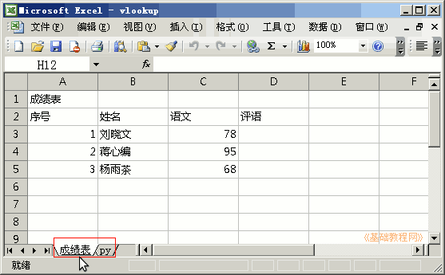
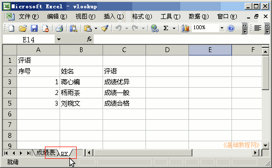
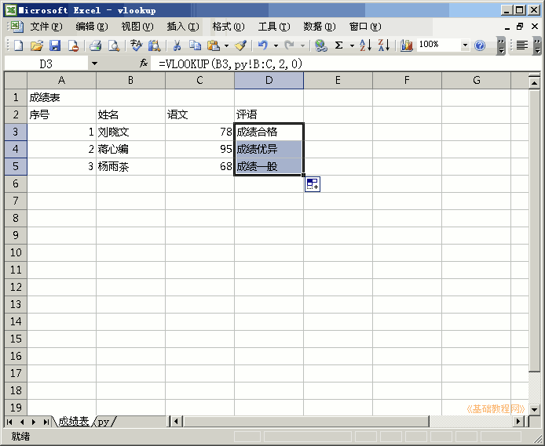
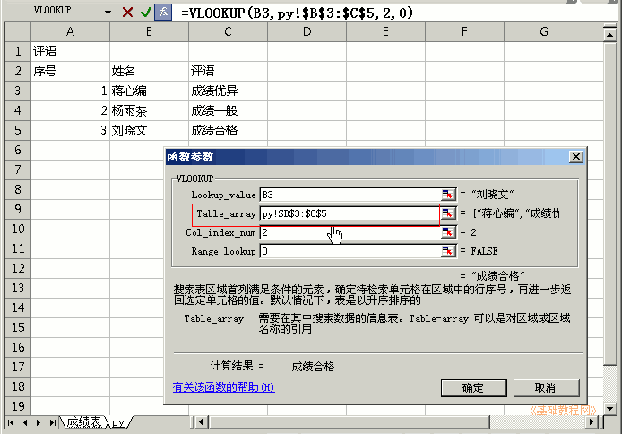

Excel 基础入门教程
二十三、vlookup函数合并提取表格 返回
用vlookup函数可以从另一张表格中提取同一人的其他资料信息；
1、启动Excel
1）点击“开始－所有程序－Microsoft－Microsoft Office Excel 2003"；
2）出现一个满是格子的空白窗口，这就是一张电子表格了，第一个格子看着边框要粗一些，处于选中状态；

2、vlookup函数
1）在一个工作薄里准备两张工作表，一张成绩表，一张评语表py，将工作表名称改好便于操作，下载范例；
 
2）选中成绩表中，评语列的第一个单元格，点编辑栏的fx，找到vlookup点确定；
3）在出来的参数对话框，第一个是查找项，两个表中相同的项，选中第一个学生“刘晓文”，这样会在第二张表里查找他；
4）第二个参数是查找合并的区域，点击第二张表，在列标题上拖动鼠标，选中B列和C列，第一列用来查找相同的学生，第二列用来合并数据；
5）第三个参数里输入2，表示把第二列的数据合并过去，如果选的列数多，以此类推；
6）第四个参数里输入0，表示大致匹配，如果是1或者留空就是精确匹配；
7）点“确定”完成，再拖动右下角手柄自动填充下面两个单元格；

8）如果第二个参数的区域里，选择的是块而不是列，需要转换成绝对引用，防止自动填充的时候出错，在编辑栏选中区域B3:C5后按F4或者手动输入美元符号$；

9）两张表格、要合并的区域中，第一列要相同，比如都是姓名，合并的数据从第二列开始排；
保存一下文件
本节学习了Excel中合并两张表格的方法，如果你成功地完成了练习，请继续学习下一课内容；本教程由86团学校TeliuTe制作|著作权所有
基础教程网：http://teliute.org
美丽的校园……
|
|
|
|
|
|
转载和引用本站内容，请保留作者和本站链接。